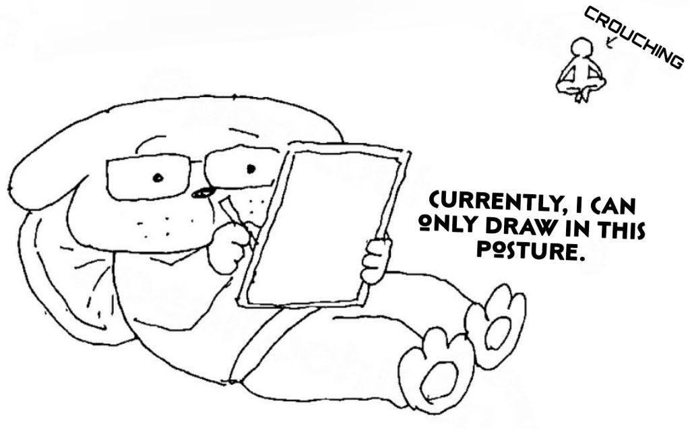
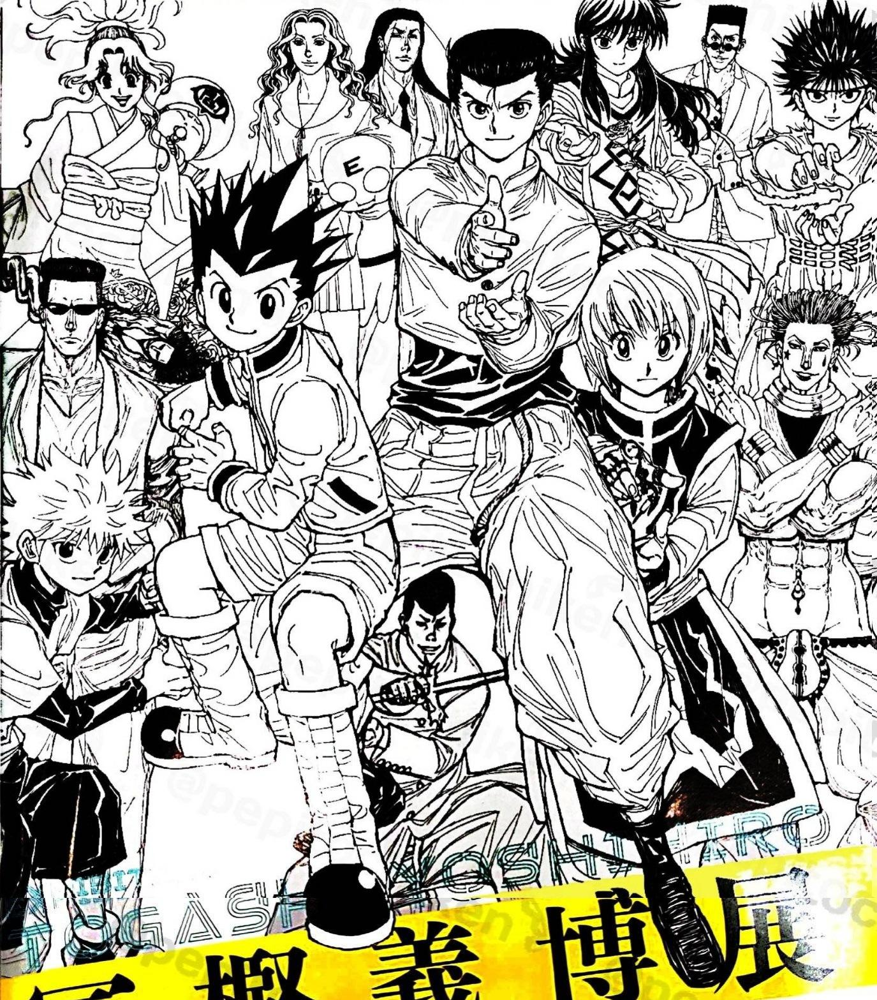

Así de severo es el dolor de espalda del autor de HUNTER x HUNTER
Las filtraciones de la próxima edición de la revista Weekly Shonen Jump informaron que el manga escrito e ilustrado por Yoshihiro Togashi, HUNTER x HUNTER, tendrá una exhibición especial que comenzará el próximo 28 de octubre en Japón. Sin embargo, la filtración incluye también un mensaje por parte del autor, en donde revela a qué grado llegó su dolor de espalda, que incluso le impidió completamente limpiarse el trasero después de ir al baño.
 HUNTER x HUNTER comenzó a publicarse en marzo de 1998 en la revista Weekly Shonen Jump, menos de un año después del inicio de la publicación de One Piece. Yoshihiro Togashi se ha tomado numerosas pausas prolongadas en la publicación de HUNTER x HUNTER desde el año 2006, algunas de las cuales se debieron a enfermedades y un dolor crónico de espalda, mientras que las razones de otras nunca fueron reveladas.
Sinopsis de HUNTER x HUNTER
HUNTER x HUNTER está ambientado en un mundo donde los cazadores existen para realizar todo tipo de tareas peligrosas, como capturar criminales y buscar valientemente tesoros perdidos en territorios inexplorados. Gon Freecss, de doce años, está decidido a convertirse en el mejor cazador posible con la esperanza de encontrar a su padre, que era un cazador y abandonó a su familia hace mucho tiempo. Sin embargo, Gon pronto se da cuenta de que el camino para lograr sus objetivos es mucho más desafiante de lo que jamás hubiera imaginado.
En el camino para convertirse en un cazador oficial, Gon se hace amigo del animado médico en entrenamiento Leorio,el vengativo Kurapika y el rebelde ex-asesino Killua. Para lograr sus propias metas y deseos, los cuatro juntos toman el Examen de Cazador, conocido por su baja tasa de éxito y alta probabilidad de muerte. A lo largo de su viaje, Gon y sus amigos se embarcan en una aventura que los pone a través de muchas dificultades y luchas. Conocerán una gran cantidad de monstruos, criaturas y personajes, todo mientras aprenden lo que realmente significa ser un cazador.